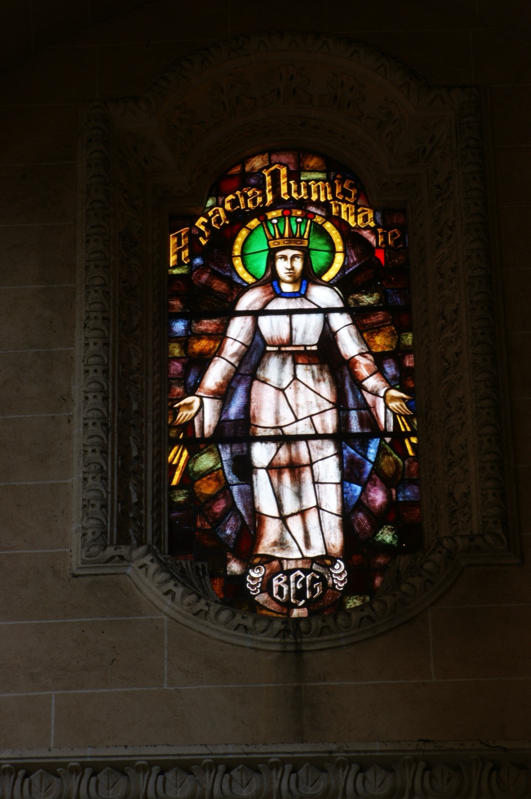

La Mare de Déu de la Medalla Miraculosa és una advocació mariana basada en una aparició de la Verge Maria a santa Catalina Labouré que inspirà el disseny de l'anomenada Medalla Miraculosa. Aquest vitrall mostra la imatge habitual de la Verge a l’anvers d'aquesta medalla: dreta i amb els braços oberts, dels quals es desprenen raigs de llum que representen, segons la Verge, les gràcies que vessa sobre les persones que les demanen. El text superior, A sacra numismate, és a dir, “Per la sagrada medalla” en llatí, fa referència a les gràcies que s’obtenen per mediació de la Medalla Miraculosa. Les inicials de la part inferior del vitrall són les del donant que en finançà la confecció.